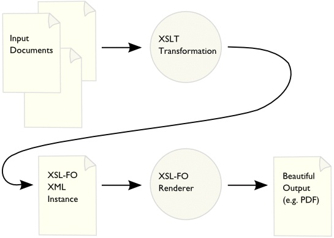
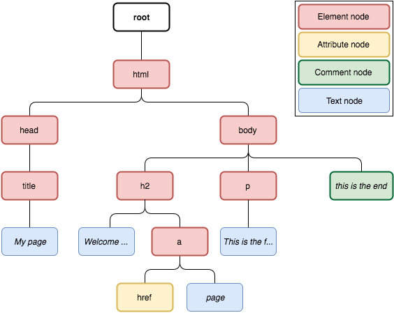

XML transformation technologies¶
Unit 5: Goals:
Recognize the need for converting XML documents.
Determine the areas of application.
Analyze the involved technologies and how they work.
Explain the specific syntax used in converting and adapting XML documents.
Create conversion specifications.
Identify and characterize specific tools related to converting XML documents.
Perform conversions in different output formats.
Document and debug conversion specifications.
Identify the main methods for storing information in XML documents.
Recognize the disadvantages of storing information in XML format.
Use relational database management systems for storing XML-formatted information.
Use specific techniques to create XML documents from information stored in relational databases.
Identify the characteristics of native XML database management systems.
Use techniques to manage information stored in native XML databases.
Identify languages and tools for processing and storing information and incorporating it into XML documents.
Learning Outcomes: 5 and 6 Evaluation Criteria:
The need for converting XML documents has been recognized.
The areas of application have been established.
The involved technologies have been analyzed and their mode of operation has been understood.
The specific syntax used in converting and adapting XML documents has been described.
Conversion specifications have been created.
Specific tools related to converting XML documents have been identified and characterized.
Conversions have been performed in different output formats.
Conversion specifications have been documented and debugged.
The main methods for storing information in XML documents have been identified.
The disadvantages of storing information in XML format have been recognized.
Efficient storage technologies for information have been established based on their characteristics.
Relational database management systems have been used for storing XML-formatted information.
Specific techniques have been used to create XML documents from information stored in relational databases.
The characteristics of native XML database management systems have been identified.
Analyzed systems and native XML database systems have been installed.
Techniques have been used to manage information stored in native XML databases.
Languages and tools for processing and storing information and incorporating it into XML documents have been identified.
Introduction¶
Although XML is a relatively readable format, this is not one of its main goals, especially considering that humans like to read data in certain formats that make them more pleasantly readable - while the XML specification states that in no case should information about how information should be displayed must be included in the documents.
In some cases, XML documents may need to be transformed to make them easier to view, or adapted so that they can be read by specific programs.
XML is primarily intended for storing and exchanging information, so if the data needs to be represented differently to optimize a process or to improve its visualization, there are several possibilities:
-
Develop a program: Since it is relatively easy to work with XML, you could develop a program that takes the XML data and generates the output as you want. This has the disadvantage that you will need to have programming knowledge and it can be a lot of work even if what you need to do is trivial.
-
Use CSS: In many cases a simple solution would be to use CSS to render information more user-friendly using a browser. But it only serves to change the way the document is displayed, not to change the type of document.
- Transform the document: An alternative solution is to transform the document into one that is intended to be viewed. There are many formats that are mainly designed to be viewed: PDF, HTML, XHTML, etc.
CSS¶
Given the following XML file:
<?xml version="1.0" ?>
<?xml-stylesheet href="sample.css"?>
<professor>
<nom>Marcel</nom>
<cognom>Garcia</cognom>
<departament>Departament d'Informàtica</departament>
<carrecs>
<carrec>Cap de Departament</carrec>
<carrec>Tutor</carrec>
</carrecs>
</professor>
Applying this as CSS
professor { padding: 30px;
margin: 30px;
border: 4px black solid;
width: 40%; }
nom,cognom { font-size:30px; }
departament { padding-top:20px;
display:block;
font-weight:bold;}
carrec{ font-style: italic;
padding-left:10px; }
carrec:after { content:","; }
The resulting page will be similar to:

However, CSS has many limitations when it comes to presenting information:
- The information cannot be rearranged as we wish.
- Attributes can be displayed, but there are many limitations to doing so.
- No new product calculation or data processing structures can be added to the document.
- There are no easy ways to format data for printing.
If the ultimate goal is not simply to decorate the document but to transform it into a completely different document, CSS is useless. CSS does not transform the document but simply changes the way it is displayed.
Conversion and adaptation of XML documents¶
The W3C created a generalization of CSS style sheets called XSL (eXtensible Stylesheet Language).
The W3C has developed three languages: * XPath: A language for referring to parts of an XML document. * XSLT (XSL Transformation, ie XSL Transformations): a language for transforming XML documents. * XSL-FO (XSL Formatting Objects): a language for specifying the format of an XML document and converting it to PDF or PostScript.

XPath¶
XPath is a simple language for identifying parts of an XML document that are of interest. It is used by XSLT, and also by XLink; it is extended considerably by XQuery.
XPath cannot be used stand-alone: it is always used in the context of a host language, whether that language is XSLT, Python, PHP, C#, JavaScript... .
XPath can be very powerful: for example, to find all div elements that have a class attribute of sock with a span child whose class attribute is equal to colour, one might write,
div[@class="sock"]/span[@class="colour"]
XPath uses a path notation (as in URLs) for navigating through the hierarchical structure of an XML document. It uses a non-XML syntax so that it can be used in URIs and XML attribute values.
XPath 3.1 became a Recommendation on 21 March 2017.
Document tree¶
XPath treat XML documents as trees of nodes. The topmost element of the tree is called the root element:


Node types¶
In XPath not only elements are nodes but also other type of things. There are seven kinds of nodes:
- root element
- elements
- attributes
- text nodes
- namespaces
- processing instructions
- comments
XPath expression syntax¶
An XPath expression is a text string representing a path through the document tree. The simplest expressions resemble file paths in Windows Explorer or the GNU/Linux shell.
Evaluating an XPath expression is looking to see if there are nodes in the document that fit the path defined in the expression. The result of the evaluation is all the nodes that fit the expression. In order to evaluate an XPath expression, the document must be well-formed.
XPath expressions can be written in two different ways:
- shorthand syntax: more compact and easier to read, which is explained in this lesson
- full syntax: longer but with more options available
XPath expressions can be broken down into search steps. Each search step can in turn be divided into three parts:
- axis: select element or attribute nodes based on their names.
- predicate: restricts axis selection to nodes meeting certain conditions.
- node selection: Of the nodes selected by the y-axis predicate, select the elements, the text they contain, or both.
XML sample¶
<?xml version="1.0" encoding="UTF-8"?>
<biblioteca>
<libro>
<titulo>La vida está en otra parte</titulo>
<autor>Milan Kundera</autor>
<fechaPublicacion año="1973"/>
</libro>
<libro>
<titulo>Pantaleón y las visitadoras</titulo>
<autor fechaNacimiento="28/03/1936">Mario Vargas Llosa</autor>
<fechaPublicacion año="1973"/>
</libro>
<libro>
<titulo>Conversación en la catedral</titulo>
<autor fechaNacimiento="28/03/1936">Mario Vargas Llosa</autor>
<fechaPublicacion año="1969"/>
</libro>
</biblioteca>

Axis¶
The axis allows us to select a subset of nodes. Element nodes are indicated by the element name. Attribute nodes are indicated by @ and the name.
/: at the beginning of the expression, indicates the root node, otherwise indicates "child". It must be followed by the name of an element or attribute.
/biblioteca/libro/autor
<autor>Milan Kundera</autor>
<autor fechaNacimiento="28/03/1936">Mario Vargas Llosa</autor>
<autor fechaNacimiento="28/03/1936">Mario Vargas Llosa</autor>
/autor
Returns nothing because <author> is not a child of the root node.
/biblioteca/autor
Returns nothing because <author> is not a child of <biblioteca>.
/biblioteca/libro/autor/@fechaNacimiento
fechaNacimiento="28/03/1936"
fechaNacimiento="28/03/1936"
/biblioteca/libro/@fechaNacimiento
Returns nothing because fechaNacimiento is an attribute
of <author> not of <libro>.
//: indicates "descendant" (children, children of children, etc.).
/biblioteca//autor
<autor>Milan Kundera</autor>
<autor fechaNacimiento="28/03/1936">Mario Vargas Llosa</autor>
<autor fechaNacimiento="28/03/1936">Mario Vargas Llosa</autor>
//autor
<autor>Milan Kundera</autor>
<autor fechaNacimiento="28/03/1936">Mario Vargas Llosa</autor>
<autor fechaNacimiento="28/03/1936">Mario Vargas Llosa</autor>
//autor//libro
Returns nothing because <libro> is not a child of <autor>.
/..: indicates the parent element.
//@año
año="1973"
año="1973"
año="1969"
/biblioteca/libro/autor/@fechaNacimiento/..
<autor fechaNacimiento="28/03/1936">Mario Vargas Llosa</autor>
<autor fechaNacimiento="28/03/1936">Mario Vargas Llosa</autor>
//@fechaNacimiento/../..
<libro>
<titulo>Pantaleón y las visitadoras</titulo>
<autor fechaNacimiento="28/03/1936">Mario Vargas Llosa</autor>
<fechaPublicacion año="1973"/>
</libro>
<libro>
<titulo>Conversación en la catedral</titulo>
<autor fechaNacimiento="28/03/1936">Mario Vargas Llosa</autor>
<fechaPublicacion año="1969"/>
</libro>
|: allows to indicate several routes.
//autor|//titulo
<titulo>La vida está en otra parte</titulo>
<autor>Milan Kundera</autor>
<titulo>Pantaleón y las visitadoras</titulo>
<autor fechaNacimiento="28/03/1936">Mario Vargas Llosa</autor>
<titulo>Conversación en la catedral</titulo>
<autor fechaNacimiento="28/03/1936">Mario Vargas Llosa</autor>
//autor|//titulo|//@año
<titulo>La vida está en otra parte</titulo>
<autor>Milan Kundera</autor>
año="1973"
<titulo>Pantaleón y las visitadoras</titulo>
<autor fechaNacimiento="28/03/1936">Mario Vargas Llosa</autor>
año="1973"
<titulo>Conversación en la catedral</titulo>
<autor fechaNacimiento="28/03/1936">Mario Vargas Llosa</autor>
año="1969"
Predicate¶
The predicate is written in square brackets, following the axis.
If the axis has selected some nodes, the predicate allows you to restrict that selection to those that meet certain conditions.
[@attribute]: select the elements that have the attribute.[number]: if there are several results, select one of them by order number;last()selects the last one.[condition]: select the nodes that meet the condition.
Conditions¶
Predicates allow you to define conditions on attribute values. The following operators can be used in the conditions:
- logical operators: and, or, not()
- arithmetic operators: +, -, *, div, mod
- comparison operators: =, !=, <, >, <=, >=
//fechaPublicacion[@año>1970]
//libro[autor="Mario Vargas Llosa"]
//@año[.>1970]
//autor[.="Mario Vargas Llosa"]
//libro[autor="Mario Vargas Llosa" and fechaPublicacion/@año="1973"]
//libro[autor="Mario Vargas Llosa" and fechaPublicacion/@año="1973"]
Node selection¶
The node selection is written after the axis and the predicate. If the axis and the predicate have selected some nodes, the selection of nodes indicates what part of those nodes we keep.
/node(): Select all children (elements or text) of the node.-
//node(): Select all descendants (elements or text) of the node. -
/text(): Select only the text contained in the node. //text(): Select only the text contained in the node and all its descendants./*: Select all children (elements only) of the node.//*: Select all descendants (elements only) of the node./@*: Select all attributes of the node.//@*: Select all attributes of the node's descendants.

Bibliography, webography and credits¶
- Bartolomé Sintés Marco. (2022, January 30). XPath: XML Path language, available at https://www.mclibre.org/consultar/xml/lecciones/xml-xpath.html